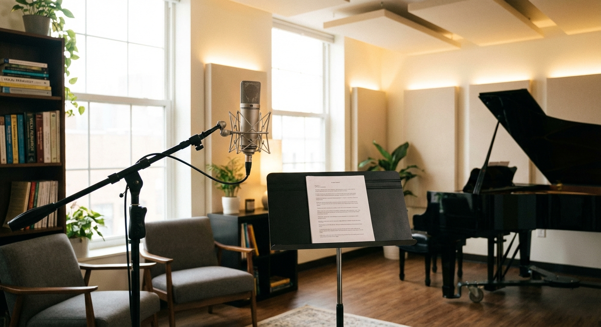

こんにちは、ナユタです。
他人の成功を羨むのは悪いことじゃない。その感情こそが、自分を成長させるガソリンになる。
嫉妬をエネルギーに変えるについて
最近、ふと嫉妬をエネルギーに変えるについて考えることがあったんだよね。
毎日忙しくしてると、つい目の前のことばかりになっちゃうけど、たまには立ち止まって、こういう本質的なことを考える時間も大事だなって思う。
特に最近感じるのは、小手先のテクニックよりも、その奥にある「想い」とか「哲学」みたいなものが、結局は一番強いんじゃないかなってこと。
やってみて気づいたこと
実際に動いてみると、頭で考えてたのとは全然違う反応が返ってくることもあるよね。でも、それは失敗じゃなくて、次に繋がる大事なヒントなんだ。
「とりあえずやってみて、違ったら直す」。この繰り返しをどれだけ楽しめるかが、成長の鍵なんじゃないかな。
これからどうする？
今回の気づきをきっかけに、僕自身も新しいアクションを起こしてみようと思ってる。
みんなも、もし何か心に引っかかることがあったら、小さな一歩でもいいから踏み出してみてほしいな。その一歩が、意外と大きな変化の始まりになるかもしれないから。
それでは、また。